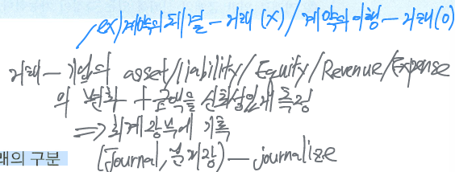

Analyzing and Recording
회계거래의 기록
회계상의 거래

기업에서 발생하는 거래의 구분
Business transactions: Economic events of an enterprise that are recorded by accountants.
- Internal transactions
- External transactions
일반적인 거래와 회계상의 거래는 대부분 일치하지만 반드시 항상 일치하지는 않는다.
- A company may carry on many activities that do not in themselves represent business transactions (hiring employees, placing order, etc.)
회계상 거래의 판단기준 (criterion)
Is the financial position (Asset / Liabilities / Owner’s equity) of the company changed? and It should be possible to measure reliably the amount of the transaction occurred.
- 재무상태의 변동 여부 + 변동액을 화폐적 단위로 측정가능 여부)
- 회계상 거래는 경제활동으로 인한 기업의 재무상태의 변화와 그 변화로 발생한 금액을 화폐적 단위로 신뢰성 있게 측정할 수 있어야 한다. 즉, 장부에 기록하는 회계상의 거래는 기업의 재산 (재무상태: financial position)의 증감을 발생시키는 사건 (회계등식의 변화를 발생시킴)만을 인식하여 기록하는 것이며 기업의 재산의 변화를 발생시키지 않는 거래는 회계상의 거래로 인식하지 않으며 회계장부에 기록하지 않는다. 여기서 재산이란 자산/부채/자본을 의미한다.
회계상의 거래로 인식되기 위한 요건
- 경제적 거래나 사건이 발생하여 기업의 재무상태(자산/부채/자본/수익/비용)의 증가나 감소가 발생한다
- 거래로 인한 금액의 신뢰성 있는 측정이 가능하다
회계상의 거래와 일반적인 거래의 비교

회계상의 거래는 차변의 증가와 감소에 영향을 미치는 4가지 거래와 대변의 증가와 감소에 영향을 미치는 4가지의 거래로 구분하여 발생하는데, 이러한 총 8가지 거래형태를 거래의 8요소라고 한다.
왼쪽을 차변 (debit), 오른쪽을 대변 (credit)이라고 한다.

회계거래 특징 및 분석 (transaction analysis)

모든 회계상의 거래는 cause and effect (원인과 결과)로 구분되며 accounting equation의 구성요소 (자산, 부채, 자본 등) 중에 둘 이상의 항목에 영향을 미칠 수 있다. 거래를 분석한다는 것은 우선 계정의 유형을 식별 (identify the type of account)하고 발생한 거래를 관련된 계정의 차변과 대변 중 어느 변에 기입할 것인가를 결정하는 것이다. 이러한 회계상의 거래를 기록할 때 각각의 거래가 발생하기 전과 발생한 후에는 반드시 회계등식 (차변합계 = 대변합계)이 일치해야 한다.
\[ 자산 + 비용 = 부채 + 자본 + 수익 \]

Account (계정)
An individual accounting record of increases and decreases in a specific assets, liabilities, or owner’s equity item (F/S 항목별로 거래의 증감사항을 집계하는 양식)
회계에서는 기업과 관련된 자산/부채/자본/수익/비용에 관한 정보를 제공할 때는 거래기록을 가능한 세부적인 단위로 구분하여 제공하고 있는데 이렇게 제공되는 세부적인 정보의 개별단위를 계정(Account)이라고 한다. 회계에서는 이러한 계정을 표시할 때 현금계정, 매출채권계정, 매입채무계정 등과 같이 계정 앞에 다른 항목과 구분할 수 있도록 별도로 붙이는 이름이 있는데 이를 계정과목 (title of account)이라 한다.
계정의 표시
T account form
T account는 총계정원장에 포함되는 계정의 증가나 감소를 표시하기 위해서 사용하는 도구이며 debit과 credit의 증감금액을 계속기록한 후 그 차액(잔액)을 account balance (계정잔액)으로 표시하는 방식을 이용한다.

F/S 항목별 계정 분석

Double-entry system (복식부기제도)
Dual (two sided) effect of each transaction is record at least in two accounts.
기록금액의 정확성을 검증하는 역할
특징
- 거래의 이중성 (duality) - 회계상의 모든 거래는 원인과 결과에 따라 차변과 대변 양쪽에 각각 같은 금액으로 이중으로 기록하는 거래의 양면성이 적용된다.
- 대차평균의 원리 (principle of equilibrium) - 모든 거래는 차변과 대변에 같은 금액이 기입되어야 하며 모든 계정들의 차변금액합계와 대변금액합계는 반드시 일치해야 한다.
- 복식부기는 기록된 차변과 대변을 비교함으로써 기록이나 계산상의 오류나 탈루를 자동적으로 비교하여 발견할 수 있도록 하는 자동 검증기능을 갖춘 계산방법이다.
- 복식부기는 정확한 자산, 부채, 순자산의 모든 변동상황을 파악할 수 있으나 거래를 기록하기 위해서는 회게지식이 있어야 한다.
계정감소의 기록방법
자산이나 부채 등이 감소한 경우에는 해당 계정을 - 표시하지 않고 반대편 계정에 기입해야 한다.

주된 영업활동에서 발생한 판매와 주된 영업활동 이외의 거래에서 발생한 판매
주된 영업활동 과정에서 발생하는 판매는 수익과 비용을 총액으로 인식하는 방식으로 회계처리하고 주된 영업활동 이외의 판매는 수익과 비용의 차액만을 이익이나 손실로 인식하는 순액표시 방식으로 회계처리 한다.
Journal (분개장)과 Journalizing (분개)
Journal (general journal) - An accounting record in which transactions are initially recorded in chronological order in one place. ⇒ Book of original entry. It shows the debit and credit effects on specific accounts.

Journalizing - The process of recording transaction data in the journal.
- 거래와 관련된 기록을 journal에 기록하는 행위
- correct and specific account titles을 정확하게 사용하여 분개하는 것이 중요
Journal 기재사항
- The date of transaction
- the accounts to be debited and credited
- the amounts to be debited and credited
- a brief explanation of the transaction (적요)

Simple and compound entries

The recording process of transaction
- analyze each transaction
- enter transaction in a journal: journalizing
- transfer journal information to ledger accounts - posting
General ledger (총계정원장)
총게정원장은 분개장에 회계처리된 계정과목들을 동일한 계정과목별로 모아서 그 계정과목의 증가와 감소 및 잔액을 계정과목별로 표시해 놓은 장부를 말한다.
The collection of all accounts used by a company (각각 계정들의 집합체) - Changes in specific account balances
양식: Three-column form of account → debit, credit, balance

General ledger가 each transaction에 포함시키는 information
- date of transaction
- titles of affected accounts
- dollar amount of each debit and credit
- explanation of the transaction
Posting (전기)
The procedure of transferring journal entries to the ledger accounts.
Posting procedure
- 분개장에 기록된 분개 중에서 전기할 계정을 먼저 파악한다
- 분개된 차변계정의 금액을 관련된 총계정원장에 동일하게 차변에 기입한다
- 분개된 대변계정의 금액을 관련된 총계정원장에 동일하게 대변에 기입한다
- 총계정원장의 적요란에는 상대계정과목을 기입한다

Chart of accounts (계정조직표)


The trial balance (T/B, 시산표)
작성 목적
- to prove (check) that the equality of debits and credits after posting.
- useful in the preparation of F/S
trial balance equation
\[ Assets + Expenses = Liabilities + Equities + Revenues \]
한계점
T/B does not prove that all transactions have been recorded or that the ledger is correct ⇒ numerous errors may exist though the trial balance column agree.
모든 오류를 검증하는 것이 아니라 차변과 대변 합계의 일치여부만 검증할 수 있다.
시산표로 검증할 수 없는 오류의 유형
- a transaction is not journalized
- a correct journal entry is not posted
- a journal entry is posted twice
- incorrect accounts are used in journalizing and posting
- offsetting errors are made in recording the amount of transaction